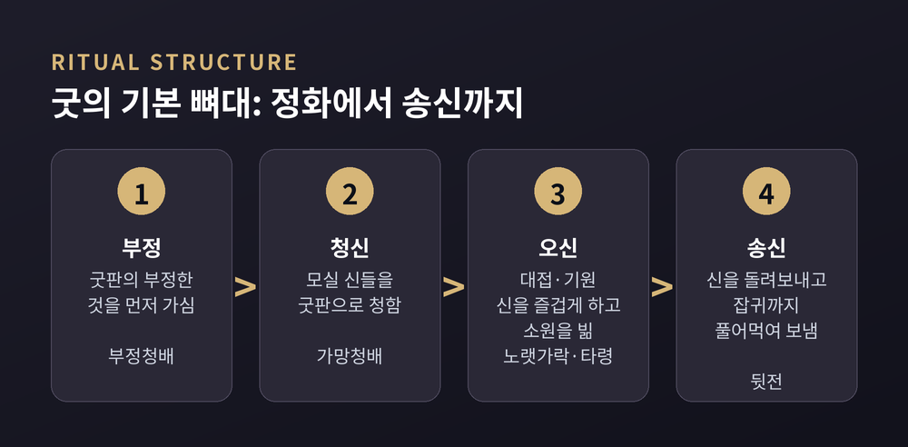
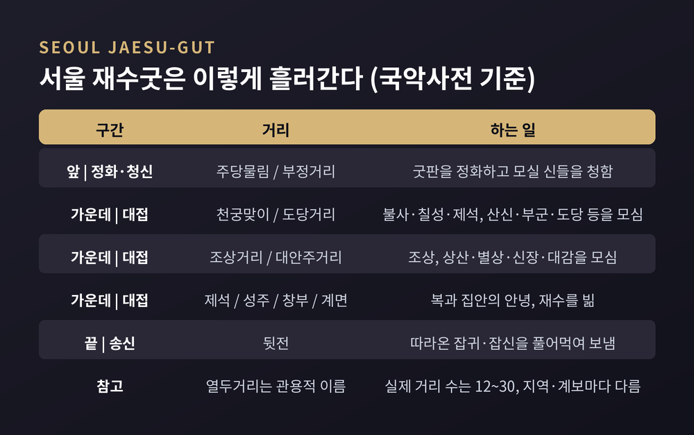
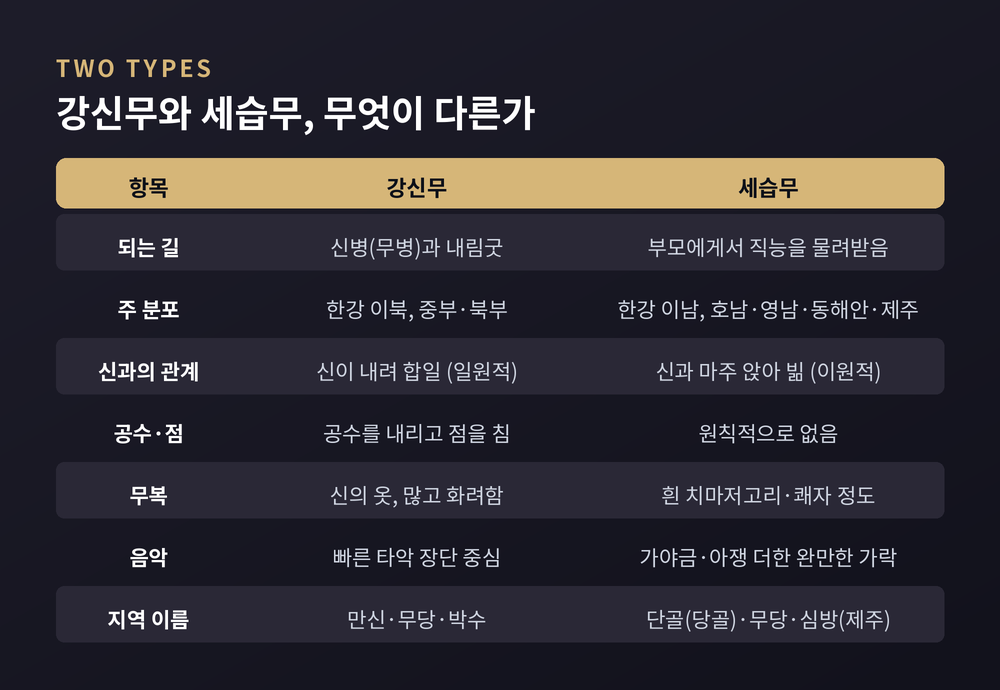
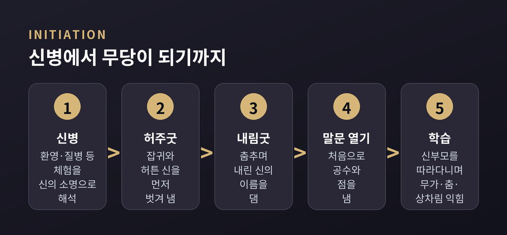
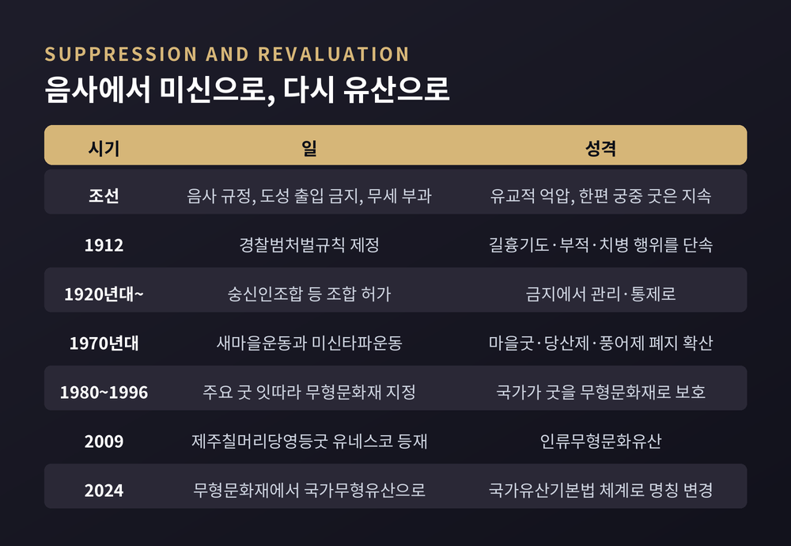
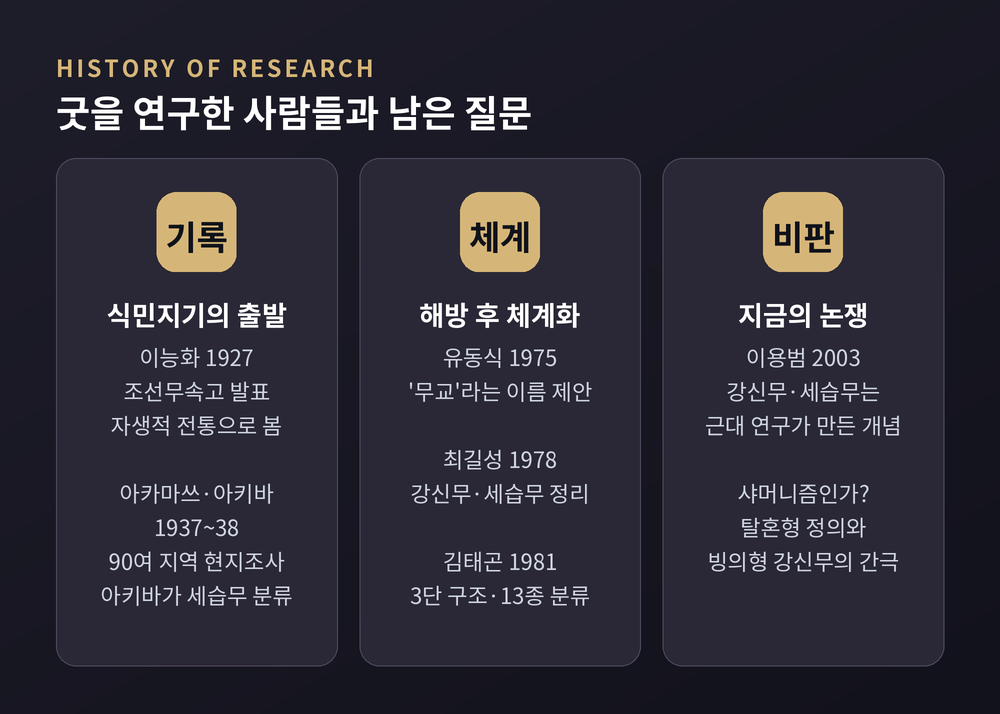

한국 무속의 굿은 어떻게 짜여 있나, 강신무·세습무와 열두거리로 읽기
신을 청하고, 대접하고, 돌려보내는 의례를 종교학의 눈으로

이번 글에서는 한국 무속의 굿을 종교학의 시선으로 정리해 보겠습니다. 신령이 실재하는지, 굿이 효험이 있는지는 이 글이 판단할 문제가 아닙니다. 굿이 어떤 구조로 짜여 있고, 누가 집전하며, 역사 속에서 어떤 대접을 받아 왔는지를 차례로 살펴보려 합니다.
먼저 세 줄로 요약하면 이렇습니다.
세 줄 요약
- 굿은 '신을 청하고 – 대접하며 빌고 – 돌려보내는' 3단 구조입니다. 열두 개 안팎의 '거리' 하나하나도 같은 구조를 반복합니다.
- 무당은 크게 신병을 거친 강신무와 가업을 물려받은 세습무로 나뉩니다. 대체로 한강 이북과 이남으로 갈리고, 굿의 모습도 다릅니다.
- 다만 이 구분 자체가 근대 연구가 만든 틀이라는 비판도 있습니다. 조선의 음사 규정부터 일제의 '미신' 단속, 무형유산 지정까지, 굿은 억압과 재평가를 함께 겪어 왔습니다.
굿이란 무엇인가
한국민족문화대백과는 굿을 "무당이 신을 청하고 환대하고 환송하는 과정으로 구성된 무속의례"로 정의합니다. 짧지만 이 정의 안에 굿의 뼈대가 다 들어 있습니다.
제의가 성립하려면 세 가지가 필요합니다. 모셔야 할 신, 그 신을 믿고 제의를 청하는 신도, 그리고 둘 사이에서 의례를 조직적으로 이끄는 전문 사제인 무당입니다. 하나라도 빠지면 굿은 성립하지 않습니다.
규모에 따라서도 나뉩니다. 여러 무당이 악사의 반주에 맞춰 무복을 입고 춤과 노래, 연기로 진행하는 것이 '굿'입니다. 한 사람의 무당이 간소한 제물을 놓고 앉아서 축원 위주로 하는 약식 제의는 '비손'이라 부릅니다. 서서 한다고 '선굿', 앉아서 한다고 '앉은굿'이라는 말도 여기서 나왔습니다.
목적별로 보면 민속학자 김태곤은 굿을 크게 셋으로 묶었습니다. 무당 자신을 위한 무신제, 한 집안을 위한 가제, 마을 전체를 위한 동제입니다. 이를 세분하면 13종이 됩니다. 집안 굿의 밑바닥에는 출생과 혼인, 죽음으로 이어지는 통과의례가 깔려 있다는 것이 그의 설명입니다.
신을 청하고, 대접하고, 돌려보내다 — 굿의 3단 구조
굿은 지역마다 모양이 다릅니다. 그런데 진행 순서에는 공통점이 있습니다.
날을 가리고 금기를 지키는 준비 단계가 있고, 이어서 신을 청하는 청신(請神), 신을 대접하며 소원을 비는 대접·기원, 신을 돌려보내는 송신(送神)이 이어집니다. 준비 단계와 끝의 금기는 신성과 관련된 절차이므로 앞뒤 단계에 포함시켜 볼 수 있습니다. 그래서 백과는 굿을 청신 – 대접·기원 – 송신의 3단 구성으로 요약합니다.
대접·기원 단계는 흔히 '신을 즐겁게 한다'는 뜻의 오신(娛神)으로도 불립니다. 서울굿에서 신을 즐겁게 놀리려고 부르는 〈노랫가락〉과 〈타령〉을 국악사전이 '오신무가'라고 설명하는 것도 같은 맥락입니다.
그리고 이 3단계 앞에는 거의 언제나 부정(不淨)을 가시는 절차가 먼저 옵니다. 굿판에 스며 있을지 모를 부정한 것을 먼저 물리는 것입니다. 전국에서 조사된 무가 700여 편을 계통별로 나눈 김태곤의 분류에서도 첫 자리는 부정, 둘째는 청신, 마지막은 송신이었습니다.
흥미로운 점은 이 구조가 겹겹이 반복된다는 것입니다.
하나의 굿은 12~30가지의 작은 굿, 즉 '거리'로 이루어집니다. 그런데 각각의 거리도 다시 청신 – 대접·기원 – 송신의 구조를 갖습니다. 큰 틀이 작은 틀 안에서 되풀이되는 셈입니다.

'열두거리'는 실제로 어떻게 흘러가나
굿을 흔히 '열두거리'라고 부릅니다. 국악사전도 서울 내림굿을 설명하며 "일반 재수굿 열두거리에 내림굿 의식이 추가된다"고 적습니다.
다만 '열둘'은 정확한 숫자라기보다 관용적인 이름에 가깝습니다. 거리의 수와 이름, 순서는 굿의 종류와 지역, 무당의 계보에 따라 달라집니다. 자료마다 정리가 조금씩 다른 것도 그 때문입니다.
대표적인 예로 국악사전이 소개한 서울 재수굿의 순서는 이렇습니다.
- 주당물림 → 부정거리(부정청배·가망청배 등) → 천궁맞이(불사·칠성·제석 등) → 도당거리 → 조상거리 → 대안주거리(상산·별상·신장·대감) → 제석거리 → 성주거리 → 창부거리 → 계면거리 → 뒷전
순서를 보면 원리가 드러납니다. 앞에서는 굿판을 정화하고 모실 신들을 청합니다. 가운데에서는 불사·제석 같은 높은 신부터 조상, 대감, 성주 같은 집안의 신까지 차례로 대접합니다. 맨 끝의 뒷전에서는 굿판 주변에 몰려든 잡귀·잡신을 풀어 먹여 보냅니다.
모셔진 신은 대접받고, 초대받지 못한 존재도 빈손으로 돌려보내지 않습니다. 굿이 누구도 소외시키지 않는 방식으로 끝난다는 점은 종교학적으로도 눈여겨볼 대목입니다.

굿의 모습은 시대에 따라서도 달라졌습니다.
예전 재수굿은 아침에 시작하면 이튿날 아침까지 이어지는 잔치였습니다. 친족과 이웃을 불러 신과 사람을 함께 대접하는 자리였습니다. 지금은 영업용 굿당에서 5~6시간 안에 끝나는 경우가 많고, 의뢰한 가족만 참여하는 개인적인 굿으로 바뀌었습니다. 음악과 춤보다 공수(신의 말)가 중시되면서 장단의 수도 줄었다는 것이 국악사전의 관찰입니다.
재수굿과 진오기굿 — 산 사람과 죽은 사람을 위한 굿
집안에서 하는 굿 가운데 대표는 두 가지입니다.
재수굿은 집안의 평안과 재물, 자손의 복, 가족의 무병장수를 비는 굿입니다. 국악사전은 이를 한국 무속에서 "가장 기본적인 굿"이라 부르고, 오늘날 굿판에서 연행되는 무당굿의 절반 이상이 재수굿이라고 적습니다. 지역에 따라 천신굿, 경사굿, 도신굿, 안택굿, 황해도의 철물이굿 등 이름도 여럿입니다.
진오기굿은 반대로 죽은 이의 넋을 좋은 곳으로 보내는 굿입니다. 재수굿이 산 사람의 안녕을 구한다면, 진오기굿은 망자의 천도를 목적으로 합니다. 진도의 씻김굿을 비롯해 오구굿, 망묵이굿, 시왕맞이처럼 이름은 달라도 같은 계열의 굿이 전국에 퍼져 있습니다.
서울에서는 망자를 위한 굿도 형편에 따라 층위가 나뉘었습니다. 일반인은 평진오기, 중류층은 얼새남, 상류층은 새남굿을 했다고 합니다. 새남굿에는 바리공주 무가를 부르는 '말미', '도령', '영실', '시왕군웅' 같은 거리가 들어 있고, 무속과 불교, 유교의 요소가 한데 섞여 있습니다.
강신무와 세습무 — 누가 굿을 하는가
한국 무당을 설명할 때 가장 널리 쓰이는 구분이 강신무(降神巫)와 세습무(世襲巫)입니다.
강신무는 "신병이라 불리는 종교체험을 거쳐 입무한 무당"입니다. 세습무는 "부모로부터 무당의 신분이나 직능을 물려받은 무당"입니다. 한국민족문화대백과의 두 항목을 쓴 최길성은, 이 두 말이 "순수한 학술어"일 뿐 일반인이 부르는 말은 아니라고 덧붙입니다.
분포는 대체로 한강을 경계로 갈립니다. 서울·경기 북부, 황해도, 평안도, 함경도 등 중부와 북부에는 강신무가 많습니다. 경기 남부와 충청, 호남, 영남, 동해안, 제주 등 남부에는 세습무가 주류입니다. 호남의 '단골(당골)', 영남의 '무당', 제주의 '심방'이 세습무의 지역 이름입니다.
이 차이는 굿의 모양까지 바꿔 놓습니다.
- 신과의 관계: 강신무는 굿 중에 신이 내려 신과 하나가 됩니다(일원적). 세습무는 신과 마주 앉아 인간의 소원을 전합니다(이원적).
- 공수와 점: 강신무는 신의 말을 직접 전하는 '공수'를 내리고 점을 칩니다. 세습무의 굿에는 원칙적으로 공수도 점도 없습니다.
- 무복과 음악: 강신무는 무복이 곧 신의 옷이라 종류가 많고 화려하며, 빠른 타악 장단이 중심입니다. 세습무는 흰 치마저고리나 쾌자 정도로 간소하고, 가야금·아쟁까지 더한 완만한 음악을 씁니다.
제주도는 그 중간입니다. 심방은 세습되지만 굿 중에 신의 뜻을 묻는 절차가 있고, 신칼·산판·요령 같은 점구를 던져 신의 뜻을 헤아립니다. 굿의 사제가 대부분 여성인 다른 지역과 달리, 제주는 남녀가 함께 사제를 맡고 수로는 남성 심방이 더 많다고 합니다.

신병과 내림굿 — 한 사람이 무당이 되는 과정
강신무가 되는 길의 출발점은 신병(神病), 다른 말로 무병(巫病)입니다. 백과는 이를 환상과 환영, 질병 같은 정신적·육체적 증세를 통해 일어나는 종교적 체험으로 설명합니다. 당사자와 공동체는 이 체험을 신이 무업으로 부르는 소명으로 해석합니다.
여기서 종교학이 주목하는 것은 해석의 틀입니다. 무당이 되는 절차로서 겪는 것만을 무병이라 부릅니다. 이미 무당이 된 사람이 무업을 그만두어 생긴 병은 '신벌'로, 굿판에서 구경꾼이 흥분 상태에 빠지는 것은 신내림으로 보지 않습니다. 같은 증상이라도 어떤 이야기 속에 놓이느냐에 따라 의미가 달라지는 것입니다.
신병을 앓는 사람은 내림굿을 받습니다. 국악사전은 내림굿이 신병을 치료하는 치유의례이자 무당으로 태어나는 성무의례라는 두 기능을 가진다고 설명합니다.
순서는 대략 이렇습니다.
- 허주굿(허튼굿): 입무자에게 붙었을지 모를 잡귀와 허튼 신을 먼저 벗겨 냅니다.
- 내림굿: 무복을 입고 방울과 부채를 들고 춤을 추다가, 어떤 신이 내렸는지 신의 이름을 댑니다.
- 말문 열기: 모인 사람들에게 처음으로 점을 쳐 줍니다. '말문이 열려야' 비로소 무당이 된다고 여깁니다.
- 신부모와 신자식: 굿을 해 준 무당과 신어머니·신딸의 관계를 맺고, 이후 스승을 따라다니며 무가와 춤, 상차림을 익힙니다.
국악사전은 내림굿을 "일상적인 인간이 신의 매개자로서의 역할을 받아 새롭게 태어나는 전환과 재생의 통과의례"로 정리합니다. 비교종교에서 말하는 입문 의례의 전형적인 구조와 겹치는 대목입니다.
한 가지 덧붙이면, 강신무에게도 학습은 필수입니다. 최길성은 강신무 역시 무가를 비롯한 제반 사항을 배워야 굿을 할 수 있다고 적습니다. 신내림이 자격을 준다면, 기량은 수련이 채웁니다.

음사에서 미신으로, 다시 유산으로 — 억압과 재평가의 역사
굿이 걸어온 길은 순탄하지 않았습니다.
고려 때 이미 무당을 성 밖으로 내쫓자는 청원이 있었지만, 무속에 대한 억압이 제도화된 것은 조선입니다. 성리학을 국가 이념으로 삼은 조선은 무속을 음사(淫祀), 곧 올바르지 않은 제사로 규정했습니다. 도성 안에서 무당의 거주와 출입을 막고, 무당에게 무세(巫稅)라는 세금을 매겼습니다.
그런데 실제 모습은 이중적이었습니다. 국가는 무당을 동서활인서에 배치해 전염병 구호를 맡겼고, 왕실에서는 병이 나면 굿을 했습니다. 실학자 이익은 『성호사설』에서 무세의 모순을 꼬집었습니다. 근절한다며 세금을 걷으면 관이 그 돈으로 이득을 보게 되고, 결국 무당을 직업으로 인정하는 셈이라는 지적이었습니다.
그 결과 무당은 국가 의례에서 밀려났고, 고을 단위의 성황제 같은 굿도 중단됩니다. 무당을 하대하는 풍조도 이때 굳어졌습니다.
근대에 들어서는 '음사'라는 유교의 언어가 '미신'이라는 근대의 언어로 바뀝니다. 1912년 제정된 「경찰범처벌규칙」은 길흉을 빌거나 부적으로 사람을 현혹하는 행위, 병자에게 기도나 부적을 주어 의료를 방해하는 행위를 처벌 대상으로 적었습니다. 3·1운동 이후에는 '숭신인조합' 같은 무속인 조합을 허가하는 방식으로 통제 방식이 바뀌었습니다.
해방 뒤에도 흐름은 이어졌습니다. 1970년대 초 새마을운동과 함께 미신타파운동이 전국으로 퍼졌습니다. 1973년 2월 경향신문은 경남 울주의 한 어촌이 주민총회에서 만장일치로 모든 마을 제사와 굿을 없애고, 풍어제 비용을 새마을사업에 돌렸다는 소식을 미담으로 실었습니다.
역설은 같은 시기에 시작됩니다. 국가는 일부 굿을 보호해야 할 문화로 지정하기 시작했습니다. 1980년 제주칠머리당영등굿과 진도씻김굿, 1985년 동해안별신굿과 서해안배연신굿 및 대동굿, 1990년 경기도도당굿, 1996년 서울새남굿이 차례로 중요무형문화재가 되었습니다. 제주칠머리당영등굿은 2009년 유네스코 인류무형문화유산에도 올랐습니다. 2024년 5월부터는 법 체계가 바뀌어 이들을 '국가무형유산'이라 부릅니다.

한 가지 기억해 둘 점이 있습니다. 무형유산 지정은 굿을 '예술과 문화'로 인정한 것이지, 특정 신앙의 진리를 공인한 것은 아닙니다. 굿이 종교이면서 공연예술이기도 하다는 이중의 성격이 여기서 다시 드러납니다. 실제로 무당 가계에서는 판소리와 산조, 줄타기 연희자가 꾸준히 나왔다는 연구도 있습니다.
굿을 연구한 사람들, 그리고 남은 논쟁
굿을 학문의 대상으로 처음 정리한 사람 가운데 하나가 이능화입니다. 그는 1927년 잡지 『계명』에 「조선무속고」를 발표하고, 무속을 외래에서 온 것이 아닌 한국의 자생적 전통으로 보았습니다.
비슷한 시기 일본인 학자 아카마쓰 지조와 아키바 다카시는 1937~38년 『조선무속의 연구』를 펴냈습니다. 전국 90여 개 지역의 현지조사를 바탕으로 한 방대한 자료집입니다. 세습무라는 유형을 입무 과정으로 처음 분류한 사람이 아키바입니다. 다만 도시와 농촌, 남성과 여성 같은 이원 구도로 조선을 서술한 방식에는 식민지주의적 시선이 담겼다는 비판도 따라붙습니다.
해방 후에는 김태곤이 전국의 무가를 채록하며 굿의 3단 구조와 목적별 분류를 체계화했습니다. 최길성은 『한국무속의 연구』(1978) 등에서 강신무와 세습무를 정리했습니다. 신학자 유동식은 『한국무교의 역사와 구조』(1975)에서 '무속' 대신 종교로서의 이름인 '무교(巫敎)'를 제안했습니다.

그리고 지금, 두 가지 질문이 남아 있습니다.
첫째, 강신무와 세습무라는 구분은 정확한가. 김태곤은 세습무가 강신무에서 갈라져 나와 제도화되며 영력이 약해진 형태라고 보았습니다. 반면 이용범은 2003년 논문에서 이 구분이 근대 초기 무속 연구가 역사적으로 만든 개념이며, 무당 개인의 신내림 체험에 지나치게 무게를 둔다고 비판했습니다. 홍태한은 강신무에게도 세습적 요소가 강하게 작용한다는 사례를 제시했습니다. 무당이 곧 천민이었다는 통념에 대해서도, 조선시대 호적을 분석하면 조선 후기에는 양인 출신 무업자가 오히려 더 많았다는 연구가 있습니다.
둘째, 한국 무속을 '샤머니즘'이라 부를 수 있는가. 종교학자 엘리아데는 샤머니즘을 황홀경(엑스터시)에 이르는 기법, 특히 영혼이 몸을 떠나 여행하는 탈혼(脫魂)을 중심으로 정의했습니다. 한국의 강신무는 대체로 신이 몸에 실리는 빙의(憑依)형에 가깝고, 남부 세습무의 굿에는 황홀경 자체가 거의 없습니다. 그래서 시베리아 샤머니즘과 한국 무속을 어느 정도 구분해서 보아야 한다는 견해가 있습니다. 반대로 신병과 내림굿이 동북아시아 샤머니즘에 보편적인 현상이라는 점에서, 같은 계보 안에서 이해하는 시각도 여전히 유력합니다.
어느 쪽이 옳다고 잘라 말하기는 어렵습니다. 다만 '샤머니즘'이라는 넓은 이름표가 한국 굿의 구체적인 결을 가릴 수 있다는 점은 기억해 둘 만합니다.
끝으로 한 마디만 더 드리겠습니다.
굿을 구조로 읽으면 뜻밖에 단정한 질서가 보입니다. 부정을 가시고, 신을 청하고, 정성껏 대접하고, 초대받지 못한 존재까지 먹여 돌려보냅니다. 그 질서는 음사로도, 미신으로도 불렸고, 지금은 유산으로 불립니다.
이 글에도 한계가 있습니다. 백과와 연구서를 옮겼을 뿐, 굿판의 소리와 냄새까지 전할 수는 없었습니다. 지역마다 다른 수많은 굿을 몇 개의 틀로 줄인 것도 사실입니다.
그래도 한 가지는 분명합니다 — 굿을 이해하는 일은 믿음을 판정하는 일이 아니라, 한 사회가 불안과 죽음을 다뤄 온 방식을 읽는 일입니다.
언젠가 굿판 앞에 서게 되신다면, 무당의 춤보다 거리의 순서를 먼저 눈여겨보시길 권합니다. 그 순서 안에 오래된 질문과 대답이 함께 들어 있습니다.